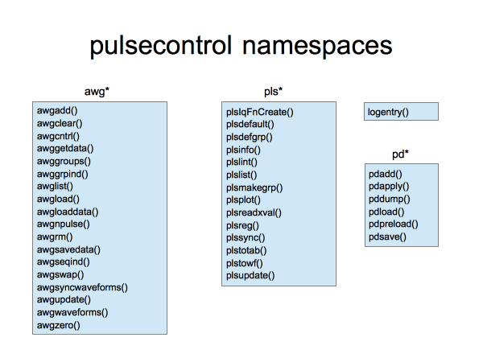
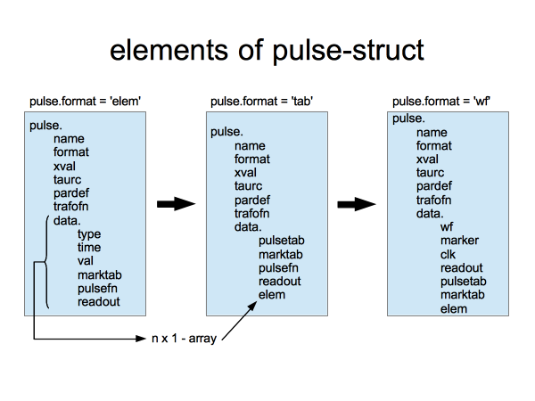
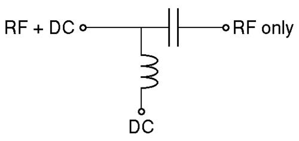
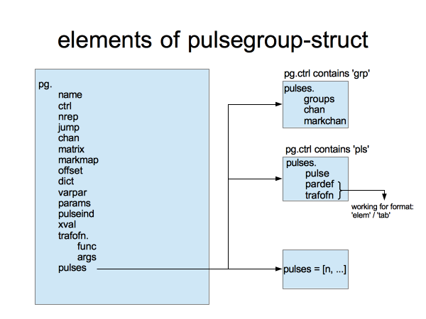
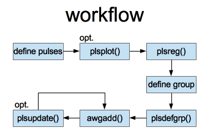

Special Measure Pulsecontrol User Guide
Contents
General Structure
The figure below depicts the general structure of the pulsecontrol package. The functionality is divided up into two main parts. This is indicated with a common prefix awg* or pls*.
The namespace awg* contains functions that are directly associeted with the transfer of pulses to the physical instrument. Not all functions are intended for direct user interaction. The common used functions are awgadd(), awglist() and awgcntrl().
The namespace pls* contains functions associeted with the management, grouping and conversion of pulses into different formats. This part of pulsecontrol is not instrument specific. The common used functions are plsreg(), plsdefgrp(), plsplot() and plslist().

awgdata Structure
awgdata is a global struct, which makes the instrument object, uploaded pulses, pulsegroups and other important properties availible in a central place. It is a virtual representation of the current state of the connected AWG(s).
See the comments of the example file for how to setup the awgdata struct: awgsetup example
Every time the functions awgadd() or awgrm() are called, the updated awgdata is saved inside the director provided in plsdata.grpdir. The format is:
awgdata_yyMMdd_hhmm
This provides a history of the awgstate and a backup method. The functions to save and load the latest awgdata manually are awgloaddata() and awgsavedata(). An awgdata struct at a specific time can be accessed with awggetdata(time) with time a serial date number.
plsdata Structure
plsdata is a global struct, which contains pulse definitions in a database, provides paths where to store groups of pulses and backup awgdata. Additionally, plsdata.tbase is a common factor to control the unit of time for the whole package.
See the comments of the example file for how to setup the plsdata struct: plssetup example
plssync(ctrl) with the ctrl string 'save' or 'load' is used to save or load plsdata from/to the location in plsdata.datafile.
The pulse types wf, tab, elem
'wf'
'wf' is the most basic format. The pulse is described via data values for every clock of the AWG. This is the format transmitted to the instrument and corresponds to a waveform.
Below is an example of this type:
clear wf_p; wf_p.name = 'myname1'; wf_p.data.wf = ones(2,1200) .* .5; wf_p.data.marker = zeros(2,1200, 'uint8'); wf_p.data.clk = 1.2e9;
wf_p.data contains the raw waveform information. wf and marker contain an entry per clock (here 1200) per channel (here 2). clk is the number of clocks per second. The above pulse will generate a 1 us long pulse of 0.5 and no markers for a clock frequency of 1.2GHz on two channels.
wf_p is not in the correct format yet. A call of plsdefault() generates additional fields and set the correct wf_p.format string. This function is called automatically when converting from one pulse to another.
wf_p = plsdefault(wf_p);
This is equivalent of setting the following fields manually.
wf_p.format = 'wf';
wf_p.taurc = Inf;
wf_p.xval = [];
wf_p.pardef = [];
wf_p.trafofn = [];
See the following chapter for how to use trafofn, pardef and taurc. The field xval is used by an external data evaluation package dataview to define the scaling of the x-axis. Look into dataview for more information about xval.
As seen in this example it is enough to define the wf_p.data part of the pulse. The other fields are not necessary to define manually and are generated automatically. They are shown to give an overview of the complete pulse in this and the following example pulses.
'tab'
'tab' is used for time-value pairs in a tabular format.
Below is an example of this pulse type:
clear tb_p; tb_p.name = 'myname2'; tb_p.data.pulsetab = [0 1; 0 0.3; 0.0 0.4];
The first row in the pulsetab defines the time. While the subsequent two rows define values at this times for channel 1, channel 2, ... Since start and end value are not equal, the intermediate values are linear interpolated (from 0.0 to 0.3 on channel 1 and from 0.0 to 0.4 on channel 2). The length of the rows is arbitrary.
The atomar unit of time is 1ns. A scaling factor plsdata.tbase is used when evaluating time in Pulsecontrol. The default value is 1000. Thus tb_p is a pulse of 1ns* plsdata.tbase *1 = 1us.
When downconverted to the 'wf' format the voltage values are linear interpolated. For our example of a 1.2GHz clock frequency the voltage of of channel 1 would rise from 0.1 to 0.3 in 1200 stepps.
It is also possible to set the field tb_p.data.pulsefn. This replaceses the default linear interpolation with a custume function handle, for arbitrary pulse shapes. Here is an example using two sinusoids:
tb_p.data.pulsefn.t = [0, 1];
tb_p.data.pulsefn.fn = {@(x)sin(2*pi*x), @(x)0.5*sin(2*pi*x)};
After the pulse table is converted to the 'wf' format, the time segment specified in pulsefn.t is overwritten with pulsefn.fn evaluated at this points. pulsefn can be an array to define several custome funcitons to replace several parts of a pulse with arbitrary functions.
Again tb_p is not in the correct format yet. A call of plsdefault() generates additional fields and set the correct tb_p.format string
tb_p = plsdefault(tb_p);
This is equivalent of setting the following fields manually.
tb_p.format = 'tab';
tb_p.taurc = Inf;
tb_p.xval = [];
tb_p.pardef = [];
tb_p.trafofn = [];
'elem'
'elem' is a flexible format to construct a pusle from prefedined building blocks. This pulse elements are defined in plstotab().
Below is an example of this pulse type:
clear pdstart pdwait pdramp; pdstart.type = 'raw'; pdstart.time = 0; pdstart.val= [0; 0]; pdramp.type = 'ramp'; pdramp.time = 1; pdramp.val = [0.2, 0.3]; pdwait.type = 'wait'; pdwait.time = 2; pdwait.val = [1, 1]; clear el_p; el_p.name = 'myname3'; el_p.data = [pdstart pdramp pdwait];
The pulse el_p uses three pulse elements pdstart, pdramp and pdwait to define a shape, which starts from zero than rises to 0.2 for channel 1 and 0.3 for channel 2 in 1us. It than jumps to 1.0 for both channels and stays there for 2us.
Again el_p is not in the correct format yet. A call of plsdefault() generates additional fields and set the correct el_p.format string
el_p = plsdefault(el_p);
This is equivalent of setting the following fields manually.
el_p.format = 'elem';
el_p.taurc = Inf;
el_p.xval = [];
el_p.pardef = [];
el_p.trafofn = [];
Each element is defined by a type and two fields time and val. Dependind on the type the fields provide different parameters to define a pulse element. When downconverted to the 'tab' format correct pulse table entries are derived, to represent the shapes defined by this elements.
Here is an overview of the currently existing elements:
raw insert [time; val] into pulse table.
mark add time' to marktab
fill stretch this element to make the total pulse duration equal to time. Idea for future development: allow several fills, each spreading a subset. Would need a second element to flush previous fill, could be fill without time.
wait stay at val (row vector, one entry for each channel) for duration time. If val has 3 entries, third is a scaling factor for the first two.
reload relaod pulse at val (row vector, one entry for each channel). time: [ramp time, wait time at load point, wait time at (0, 0) after load]
meas measurement stage at [0, 0] for time(1), RF marker delayed by time(2) and off time(3) before end of the stage. [time(2) is lead delay, time(3) is negative tail delay. Optional val(1) is the readout tag. If it is given and not nan, time 4 and 5 set its delays with the sae convention as for the marker. Optional val(2,3) moves the measurement point away from 0,0. Makes meas_o obsolete.
meas_o as meas, but measure at current voltages, not 0,0.
ramp ramp to val (row vector, one entry for each channel) in time. opt val(3) is multiplier
comp measurement compensation at val(1:2) (one for each channel) for duration time(1). Ramps voltage to target and back over time(2) and time(3) at the beginning and end of the stage, respectively. If length(val)>=4, val(3:4) are used as final value. The compensation value could be determined automatically, but this feature is not implemented yet.
adprep adiabatic ramp along second diagonal (epsilon) from val(1) to val(2), ramp duration time.
adread same, going the other way.
rfpulse RF pulse using an IQ mixer with a mixer calibration present in caldata. Signals for I and Q are generated to produce a sinusoidal controllable in amplitude, phase and frequency. val(1:5)=[freqStart, freqStop, freqLO, amplitude, phase]. Using different values for freqStart and freqStop produces a chirp. val(6:7)=[calnumber, runind] are optional and are used as indices in caldata for a specific calibration, e.g. for multiple mixers. Otherwise the calibration with the name 'iqmx' is used. A starting element can be produced by setting the time to 0. Note: Vp amplitude expected (peak-to-zero amplitude). Specific: Tektroniks AWG expects Vpp on default, so Vpp=2*Vp is used inside rfpulse.
- how to use dict related functionality
The figure below is a summary of the discussed pulse formats. It also shows how the pulse information is kept when converting from 'elem' to 'tab' to 'wf'. The original fields are not deletet. They are rather left in the pulse when it is converted. The data array of 'elem' for example is moved into the data.elem field when converting to 'tab'.

trafofn, pardef, varpar, params, taurc
implimentation of trafofn, pardef, ... plsmakegrp()
basic documentation of trafofn, pardef, ... plsdefgrp()
- pardef working on individual pulse (n x 2)-array: (i,1) pulse element to target, (i,2) if neg. time index/ if pos. val index
- create variations of pulse based on varpar/parm in one group
- replacing targeted value generated by trafofn(params(i)) or if trafofn empty params directly
- works for 'elem' and 'tab'
- different purpose of trafofn in group struct opposed to pulse struct: transform all final wf-values based on custome function + args
- taurc is for compensation of physical setup: combination of dc + rf signal from AWG channel, see picture

This section describes the process of parametrisation for 'elem' or 'tab' type pulses. This are currently the only types of pulses to support this feature.
Using parametrisation enables the creation of a series of pulses, where an arbitrary parameters is varied.
Markers
Besides the analog part of the data, a waveform inclueds two digital marker parts, which can be set for every clock individually to 'on' or 'off' on additional output channels. This is useful for triggering other instruments based on the index position within the waveform.
The creation of markers is supported on all levels of the pulse format:
In an 'wf' the marker is set using the data.marker field. The field has to be the same length as the data.wf field. It must contain 0-3 of the type unsigned char. Zero if no marker should be set. One for the first marker on channel one two for the second and three for both markers. For example:
wf_p.data.marker = zeros(2,1200, 'uint8');
wf_p.data.marker(1,1:120) = 1;
This generates a short marker pulse on the first channel for one tenth of the total pulselength of 1200 for the first marker.
It is more convinient to use data.marktab when creating a 'tab' pulse. Analogous to the pulsetab the marktab contains the start times in the first rows. The subsequent rows contain the widths of the marker pulses. For two channels one two marker per channel this follows the schema:
[time; channel1_marker1_duration; channel1_marker2_duration; channel2_marker1_duration; channel2_marker2_duration;]
Here is an example:
tb_p.data.marktab = [ 2 ; 1 ; 0 ; 0 ; 1 ];
This fires marker1 of channel one and marker2 of channel two for 1us starting at 2us.
When using 'elem' the pulse element 'mark' is used to write to the marktab.
An advanced feature is the routing of marker channels. It is for example possible to define markers for one channel and have them executed in parallel on additional channels. Or exchange the markers of several channels. This is realised using the markmap field in a pulse group. Consult the section 'groups' below for group specific questions.
Note that you can only route both markers of a channel at the same time. This is not a problem when using just one marker per channel.
The usage is defind in plsdefgrp() as follows:
markmap = [marker_source_channel1 marker_source_channel2, ...; marker_output_channel1 marker_output_channel2, ...]
An example would be to route the markers from channel one to all channels for four channels in total:
group.markmap = [1 1 1 1; 1 2 3 4];
or to exchange the markers of the first two channels:
group.markmap = [1 2 3 4; 2 1 3 4];
Groups
Only groups can be uploaded to the AWG. They consist of a number of pulses in various forms, or just one pulse in the most simple case. The group struct is similar to the struct of the pulse itself and is depicted in the following figure. Refer to the comments in plsdefgrp() for a quick reference.

The group pg with the name pg.name has a number of fields. The field pg.markmap is discussed in the above section about markers. It is used to map markers from different channels to different marker outputs. The field pg.xval is a merging of the xval fields of the individual pulses. It is used by an external data evaluation package dataview to define the scaling of the x-axis. Look into dataview for more information about xval.
The fields pg.varpar and pg.params are used to parametrize certain aspects of an 'elem' or 'tab' pulse. Refer to the section above discussing it in connection with pardef and trafofn of the individual pulses inside the group.
ctrl, nrep, jump, pulseind
This fields control how the group behaves.
- explain single fields with example
chan, matrix, offset, trafofn
This fields modify the group in several ways and set its output destination.
- explain single fields with example
dict
This is a dictionary of predifined pulse elements used to create 'elem' pulses.
- ask harvard nicely to write about it and provide example uses
pulses
This field contains information about the pulses used in the group.
The above figure about the pulsegroup struct shows three possible cases of content of the pg.pulses field (starting from the bottom):
- The pulses are part of the database in plsdata.pulses and are referenced via their index, e.g., pg.pulses = [1, 2, 3] will use plsdata.pulses(1:3).
- An array of pulse structs is provided directly, without the step of retrieving the pulses from the database.
- Instead of single pulses use whole groups. This creates a group of groups in a recursive manner. To use this feature pg.pulses.groups has to be an array of already existing groups adressed by their group names, e.g., pg.pulses.groups = {'pg1', 'pg2'} will use pulse groups with the names 'pg1' and 'pg2', which were created with plsdefgrp() earlier to create a new group
Cases 1 and 2 create groups of the type 'pls', since pulses are used. The third case creates groups of the type 'grp'. The type of group is specified inside the ctrl string pg.ctrl by plsdefgrp() automatically or it can be set manually when the group is defined.
Besides pg.pulses.groups for type 'grp' the field pg.pulses.chan and pg.pulses.markchan exist to overwrite the output of the inner groups indiviually oposed to pg.chan and pg.markmap for all groups at once. The field pg.pulses.chan has as many rows as inner groups. The columns specify the output channels. The same is true for pg.pulses.markchan. If the output channel is set to 0 the specific output is ignored.
For the example of using the two inner groups 'pg1' and 'pg2' as in case 3 above:
pg.pulses.chan = [1 2; 2 0];
The inner group 'pg1' is routet to channel 1 und 2. The first channel of 'pg2' is routed to the physical channel 2 and the second channel of the group is omitted.
Workflow
At first a working configuration of pulsecontrol has to be enshured. Refer to the sections awgdata, plsdata above and the section "What Setup Do I Need?" in the Getting Started guide.
A typical procedure how to use pulsecontrol is depicted in the figure below.

- at first the desiered pulses are defined
- the pulses can be plotted by plsplot() to enshure the correct shape visually
- using plsreg() the pulses are 'registered' in the plsdata database. Since the database is backad up on disk, this enshures consistency and safty
- a pulse group is defined using the pulses created in the first step. It is convinient to use the index of the pulse in the plsdata database. An alternative is to write the pulse struct(s) directly in the .pulses field of the group
- the function plsdefgrp() saves the group to disk inside the directory plsdata.grpdir. Only groups saved in this directory can be send to the AWG. This enshures that no information is lost.
- finally awgadd() is used to transmit the group or several groups to the AWG
- the function plsupdate is used to update some parameters of the group. The fields name, chan, markmap, offset, pulseind, pulses cannot be updated. The modified group can be retransmitted to the AWG to reflect the changes
Refer to the section "Example: Creation Of A Simple Pulse..." in the Getting Started guide.
- explain when to use plsinfo()
- explain how to use plsmakegrp()
- explain how pulse is documented in plslog and how to retrieve states
Multiple AWGs
- remains ToDo